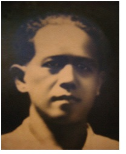
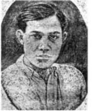

NHỮNG MẨU ĐỜI (2)
Phan Văn Chánh

(1906-1945)
Người gốc Bình Trước (Biên Hòa), thuộc gia đình trung lưu - cha làm thư ký trong bộ máy chính quyền - anh học tại Trường Trung Học Chasseloup Laubat, sang Pháp ngày 25 tháng 9 năm 1925 và ghi danh học Khoa Y Dược tại Paris.
Anh cộng tác với báo Báo của sinh viên An Nam (Journal des Etudiants Annamites) do Trần Văn Thạch chủ trương, tham gia Đảng An Nam Độc Lập cùng Tạ Thu Thâu rồi cùng Thâu nhập vào Phái Tả Đối Lập năm 1930. Bị trục xuất khỏi Pháp tháng 5 năm 1930.
Tại Sài Gòn, anh dạy học trường tư và tham gia thành lập phái Tả Đối Lập. Vào năm 1932, để thức tỉnh ý thức giới cần lao, cùng Huỳnh Văn Phương bí mật xuất bản một số sách, trong đó có những cuốn chữ Pháp dịch sang chữ Quốc Ngữ như Tuyên ngôn của đảng cộng sản, Chủ nghĩa xã hội không tưởng và chủ nghĩa xã hội khoa học...Bị bắt ngày 8 tháng 8.1932, bị kêu án 4 năm tù treo ngày 1 tháng 5.1933, ra tù anh tham gia nhóm La Lutte. Bị bắt ngày 13 tháng 7.1939, qua tháng 3.1940 anh bị kết án 3 năm tù, 5 năm biệt xứ và 10 năm tước quyền công dân rồi bị đưa ra Côn Đảo.Vẫn hoạt động trong nhóm Tranh Đấu giữa các biến cố năm 1945. Lọt vào tay bọn sát thủ của Trần văn Giàu, anh bị bắn vào tháng 10 trong bưng biền Thủ Dầu Một.

Huỳnh Văn Phương (1906-1945)
Xuất thân từ một gia đình giầu có, sang Pháp năm 1927 sau khi học Trung Học Chasseloup Laubat ở Sài Gòn. Học ba năm Luật tại Paris, gia nhập Đảng An Nam Đối Lập, viết báo La Résurrection (Phục Hưng), ‘’cơ quan thanh niên cách mạng An-nam’’ sau đó cuối 1929, cùng Tạ Thu Thâu và Phan Văn Chánh tập họp trong Phái Tả Đối Lập Đông Dương. Anh là tác giả bài La mise en valeur de l'Indochine et la bourgeoisie annamite (Công cuộc khai thác Đông Dương và giai cấp tư sản An Nam) đăng trong tạp chí Lutte de classes (Đấu tranh giai cấp tháng 4.1930). Bị trục xuất hồi tháng 5.1930 đồng lượt với Thâu, anh là một người trong số sáng lập phái Tả Đối Lập ở Sài Gòn.
Năm 1933, anh cộng tác nhóm La Lutte cùng viết trong tạp chí Đồng Nai, một tạp chí văn học. Từ đó tới 1936 anh vẫn hoạt động trong nhóm La Lutte. Tuy nhiên, năm 1935 anh tự động ủng hộ hai ứng cử viên Lập Hiến vào Hội Đồng Quản Hạt là Dương Văn Giáo, trên tờ báo tư sản Đồng Thanh và Huỳnh Ngọc Nhuận, qua một tờ truyền đơn ở Bạc Liêu. Từ đó Tạ Thu Thâu coi anh như một ‘’vi trùng dịch hạch trong phong trào lao động’’.
Năm 1936, Phương rời Sài Gòn ra Bắc Kỳ, ở đó hoàn tất khóa học về Luật trong khi cộng tác với báo Le Travail (Lao Động) - tương tự như La Lutte ở Sài Gòn - rồi với báo Progrès social (Tiến bộ xã hội). Nhóm Tia Sáng, xu hướng Trotskyist ở Bắc, lên án anh như một kẻ trung phái, rồi coi anh như một kẻ phản bội khi anh thảo diễn văn chính trị cho Phạm Lê Bổng, người phái bảo hoàng. Trở về Sài Gòn làm luật sư, đến cuối 1939 chính quyền thực dân không động chạm gì đến anh trong cuộc đàn áp lúc thế giới chiến tranh khởi đầu.
Sau cuộc đảo chính Nhật ngày 9.3.1945, nhóm Trí Thức tập hợp xung quanh Huỳnh Văn Phương tham gia Mặt Trận Quốc Gia Thống Nhất của Hồ Văn Ngà. Sau khi Nhật trao quyền Nam Kỳ cho Hồ Văn Ngà, Ngà phong Hồ Vĩnh Ký cùng Huỳnh Văn Phương chỉ huy Sở Mật ThámNam Kỳ. (Thế mà Trần Văn Giàu sẽ viết trong cuốn sách Lịch sử giai cấp công nhân Việt Nam: ‘’Bọn Trotskij đã kiểm soát cơ quan mật thám và cảnh sát từ ngày 9 tháng 3’’. Sự thật, tên Đại Tá Nhật Ichikawa (tiếng Việt Nhất Xuyên) kiểm soát Sở Mật Thám Sài Gòn sau ngày đảo chính (xem báo Sài Gòn ngày 1.6.1945). Ở đó Phương phát hiện một tập hồ sơ bí mật về Trần văn Giàu có liên lạc với mật thám Pháp, bèn chụp những chứng cứ đó thành bốn bản, đưa cho Hồ Vĩnh Ký, Đạo Khùng thủ lãnh Hòa Hảo, và Dương Văn Giáo lãnh tụ Lập Hiến. Giáo và Phương sẽ bị đao thủ của Trần văn Giàu hạ sát, còn hai người kia cũng vong mạng trong tay Việt Minh.
Theo lời Bác Sĩ Hồ Tá Khanh, một người cùng bị giam chung với Huỳnh Văn Phương ở Chợ Đệm là Dược Sĩ Thái Văn Hiệp ở Đakao (Sài Gòn), đã tận mắt thấy đao thủ lôi thây Phương đẵm máu.

Trần Văn Thạch
(1903-1945)
Sinh tại Chợ Lớn, trong một gia đình trung lưu, đỗ tú tài năm 1925 tại Trường Trung Học Chasseloup Laubat. Tại Pháp vào tháng 5 năm 1926, chuẩn bị để lấy bằng cử nhân triết học ở Toulouse, rồi lên nhập Văn Khoa Đại Học Paris.
Ngày 15.3.1927 anh sáng lập tờ báo Journal des Etudiants annamites (Tờ báo của sinh viên An Nam) và trên báo đó, ngày 15 tháng chạp, anh viết ‘’Một giấc mơ kỳ lạ’’ (Un rêve singulier), một kiểu dự đoán chính trị trong đó anh mường tượng Thành Phố Sài Gòn trước ngày độc lập, với một đảng tư sản và một đảng công nhân đối lập. ‘’Chương trình hành động tốt nhất mà chúng ta có thể chấp nhận được là chương trình gồm cả giải pháp cho vấn đề xã hội và giải pháp cho vấn đề dân tộc’’, đó là lời tuyên bố của anh nói với một nhà tư sản kiến thức không hẹp hòi.
Tháng giêng 1928, trong một bài báo khác, anh phản đối những người theo chủ nghĩa quốc gia bảo thủ. Trong tập san của ‘’Liên Minh chống áp bức của thực dân và đế quốc chủ nghĩa’’, anh viết bài phản đối ‘’bọn cai trị chúng ta, chúng mong muốn một cách đê nhục là đào luyện chúng ta như thế nào đó để mãi mãi chúng ta trở thành một con người chỉ biết tuân phục...’’
Gặp Tạ Thu Thâu trong Đảng An Nam Độc Lập, anh khẳng định mục đích học hành ở nước ngoài phải nhằm giải phóng xứ sở. Tháng giêng 1929, trên Báo của sinh viên An Nam anh nhấn mạnh tầm quan trọng của sự đoàn kết giữa trí thức và lao động. Vào tháng 5, khi anh chủ trì Hội Tương Tế Đông Dương ở Paris, anh phản đối Bộ Thuộc Địa về các vụ trục xuất người An Nam.
Trở về Sài Gòn tháng giêng năm 1930, Trần Văn Thạch dấn thân vào thời cuộc sắp bị cuộc khởi nghĩa Yên Bái cùng phong trào nông dân đảo lộn sâu sắc, tiếp theo là cuộc đàn áp đẫm máu năm 1930-1931. Anh kiếm sống bằng cách đi dạy văn học trong các trường tư, rồi tham gia nhóm La Lutte, cùng các bạn ‘’từ Pháp trở về’’ quần tụ xung quanh Nguyễn An Ninh để công khai đương đầu chính quyền thực dân. Trong các cuộc tuyển cử vào Hội Đồng Thành Phố, tháng 4 đến tháng 5 năm 1933 tại Sài Gòn, anh đứng tên trong Sổ Lao Động của nhóm La Lutte đưa ra bênh vực một chương trình đòi cải cách: Đòi quyền bãi công, ngày làm 8 giờ. Anh được trúng cử cùng Nguyễn Văn Tạo, phái Stalin, nhưng chính quyền thực dân không thể dung túng hai ‘’ông hội đồng cộng sản’’, hủy chức họ trong vài tháng sau.
Trong Phong Trào Đông Dương Đại Hội 1936, anh công tác trong Ủy ban hành động của nhóm La Lutte. Năm 1937, anh đi điều tra vụ điền chủ chiếm đoạt đất đai nông dân ở Rạch Giá. Sau khi báo La Lutte đăng bản báo về những cuộc bê bối ấy và sau khi Tạ Thu Thâu chuyển đơn khiếu nại của nông dân đến Thống Đốc Nam Kỳ, chính quyền phải cho mở cuộc điều tra.
Tháng 6.1937, khi Nguyễn Văn Tạo cùng bè bạn xu hướng Stalin, thừa mạng lịnh Moscou dứt cộng tác với xu hướng Trotskyist, nhóm La Lutte tan rã, Trần Văn Thạch đứng về phía các đồng chí Tạ Thu Thâu. Qua tháng 9, anh bị kết án hai tháng tù về tội hoạt động nghiệp đoàn. Trong cuộc tuyển cử Hội Đồng Quản Hạt tháng 4 năm 1939, anh được đắc cử cùng Tạ Thu Thâu và Phan Văn Hùm, nhưng qua tháng 10 anh bị hủy chức trong lúc bị giam trong Khám Lớn
Tháng 4 năm 1940, trước tòa, khi anh bị trách cứ về tội kích động chống lại ngân sách quốc phòng, anh nói xứ sở anh dân quá nghèo làm sao chịu đựng nổi. Tòa kêu án 4 năm tù, 10 năm biệt xứ và tước quyền công dân, anh bị đầy ra Côn Đảo.
Trở về đất liền năm 1944, anh sống quản thúc ở Cần Thơ. Sau ngày 9 tháng 3 năm 1945, chính quyền Pháp bị quân Nhật lật đổ, anh cùng các đồng chí trong nhóm La Lutte tổ chức Đảng thợ thuyền cách mạng, rồi cho tái bản tờ Tranh Đấu khi Nhật đầu hàng.
Ngày 23 tháng 9.1945 Sài Gòn nổi dậy bạo động chống quân đội Pháp tái chiếm thành phố. Nhóm Tranh Đấu, sau khi chịu tổn thất nặng nề ở mặt trận Tân Bình, các chiến sĩ còn sống sót rút về Thủ Đức, đóng ở Xuân Trường. Nơi đây, một hôm khuya, công an của Trần văn Giàu ùa đến vây bắt cả nhóm.
Ngay trước khi quân đội Anh-Ấn tiến vào Thủ Dầu Một ngày 23 tháng 10.1945, bọn ngục tốt Việt Minh tại bưng biền miệt Bến Súc liền hạ sát tất cả những người bị cầm tù.
Khi sắp bị bắn, Trần Văn Thạch trao chiếc đồng hồ túi của mình cho một thanh niên gác ngục, trước là học trò cũ của anh, nhờ đưa lại cho em anh. Bà Bác Sĩ Nguyễn Ngọc Sương, vợ Hồ Vĩnh Ký- người khởi xướng Phong Trào Phụ Nữ Tiền Phong - và chồng bà cũng bị bắn đồng loạt độ ba mươi người, bà nói với tên cầm súng: ‘’Hãy nhằm đúng tim tôi mà bắn!’’ (một người ở vùng đó thuật với tác giả).
Nguyễn Văn Sở
(1905-1945)
Sinh ngày 6 tháng 10 năm 1905 tại Chợ Lớn trong một gia đình nghèo, là môn đệ hăng hái của Nguyễn An Ninh, Nguyễn Văn Số bị đuổi ra khỏi Trường Sư Phạm Sài Gòn năm 1926 vì hoạt động chính trị. Anh đi làm bồi tàu, có trú một thời gian tại Marseille rồi trở về Sài Gòn vào năm 1928. Anh làm việc trong một nhà in và dạy học trong một trường tư.
Có chân trong nhóm La Lutte, anh được dự cử trong các cuộc tuyển cử năm 1933, 1935 và 1939. Bị bắt vào tháng 7 năm 1937 vì lập hội bất hợp pháp (Ủy ban khởi phát nghiệp đoàn), bị giam tại Khám Lớn Sài Gòn, anh tuyệt thực tháng 9 anh được thả. Bị lao nặng, anh lại bị bắt và kết án ngày 10 tháng 11 năm 1937 một năm tù và 10 năm biệt xứ vì hoạt động ‘’lật đổ chính quyền’’. Lại bị bắt vào tháng 9 năm 1939, anh bị đày ra Côn Đảo.
Giữa biến cố năm 1945, mặc dầu sức khỏe tiều tụy anh vẫn chung lòng đấu cật với anh em nhóm Tranh Đấu. Anh là một trong số người bị Việt Minh ám sát trong vùng bưng biền Thủ Dầu Một hồi tháng 10 năm 1945.

Trần Văn Sĩ (1907-1941)
Sinh ngày 20 tháng 10 năm 1907 tại Tân Thạnh Đông (Gia Định), sau khi học xong ở Hà Nội, anh làm Đốc Công Trường Tiền, rồi sang Pháp ngày 22 tháng 7 năm 1929.
Ở Paris cùng Nguyễn Văn Lịnh, từ năm 1931, khích động nhóm cộng sản tả phái Đông Dương, tự coi có nhiệm vụ sửa chữa ‘’những sai lầm của đảng cộng sản Đông Dương, hướng theo tinh thần Phái Tả Đối Lập xu hướng Trotskyist ở Nga’’. Ở Paris, anh cùng Maurice Nadeau công tác chung trong Chi Bộ Tả Đối Lập Pháp ở Quận 13.
Từ tháng 2 năm 1932, nhóm này trình bầy trên một tờ báo in Roneo, sau đó đặt tên Đuốc Vô Sản, những luận thuyết của Phái Tả Đối Lập về cách mạng Đông Dương, và sau đó bị những người An Nam trong phân ban thuộc địa của đảng cộng sản Pháp công kích dữ dội. Rốt cụộc vào tháng 10 năm 1933, khi nhận thấy không thể được chấp nhận như bộ phận đối lập trong đảng cộng sản Đông Dương, nhóm này trình bầy với Ban Thư Ký Quốc Tế ý định thành lập một đảng cộng sản mới. Năm 1935, Trần Văn Sĩ đứng trong hàng ngũ những người khởi xướng việc thành lập phân bộ Đệ Tứ Quốc Tế ở Đông Dương.
Trở về Nam Kỳ năm 1937, Sĩ tham gia nhóm La Lutte, bấy giờ đã trở thành cơ quan xu hướng Trotskyist, sát cánh Tạ Thu Thâu. Năm 1939 trong cuộc tuyển cử Hội Đồng Quản Hạt tháng 4, anh đứng tên trong Sổ Đệ Tứ Quốc Tế. Bị bắt ngày 13 tháng 7 vì đã ‘’phản đối việc thành lập một quỹ quốc phòng và đề nghị đem khoản tiền đó để làm việc công ích’’, anh bị kết án ba năm tù. Sau đó chết tại Côn Đảo.